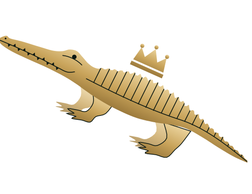
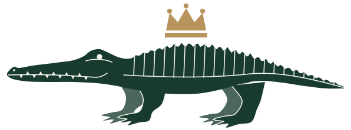

Paseo · logo principalEncabezado de la web, letreros, empaques, firma de correos.Descargar latónDescargar verde
Un mismo cocodrilo propio, coronado, en varias poses según dónde aparece. Siempre en latón sobre terciopelo verde, o en verde sobre marfil.
No es un dibujo que se estira o se recorta: cada pose tiene su uso. Descarga los archivos en SVG, se ven nítidos a cualquier tamaño.


El cocodrilo acompaña al nombre en Bodoni, con «Quiroga» en itálica dorada. Debajo, en mayúsculas espaciadas: Boutique multimarca · Ibagué.

Tres materiales y nada más: terciopelo verde, marfil y latón.
Listas para subir: foto de perfil, historia y portada de Facebook.